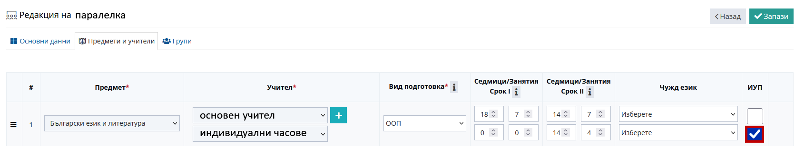
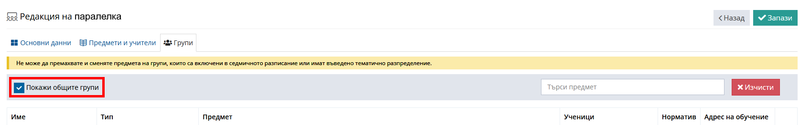

1. Редактиране на формата на обучение в НЕИСПУО:
- neispuo.mon.bg
-> Институции -> Учебен план -> Паралелка -> Раздел А -> Добавяне на група:
- Начин на изучаване -> ЗУЧ-Общообразователна подготовка;
- Учебен предмет -> БЕЛ, МАТ, ЧО, ЧП и т.н.
- [v] Индивидуални часове -> Хорариум, според дата на възлагане на часовете и норматив на учителя;
- Избор на ученик, който се обучава в групата;
- Избор на учител и дата на възлагане на часовете -> Запази.
2. Редактиране на формата на обучение в НЕИСПУО:
- neispuo.mon.bg
-> Модул "Деца и ученици" -> Лични данни за ученика -> Паралелки/групи(шапката) ->
-> Редакция -> Форма на обучение: Комбинирана - за ученици със СОП
3. Добавяне на учителя към учебните предмети, по които ще води КФО в ШКОЛО:
- shkolo.bg
-> Администрация -> Предмети -> Добавяне на учителя към всички предмети по КФО
-> Администрация -> Паралелки -> Редакция -> Предмети и учители -> Добавяне на учителя към всеки от предметите за КФО
[v] Добавяне на отметка ИУП срещу учителя за индивидуална форма

- В случай на необходимост от редакция на общите групи, могат да се визуализират:
-> Администрация -> Паралелки -> Редакция -> Групи -> [v] Покажи общите групи

4. Създаване на група в паралелката, в която ще преподава със следните параметри:
- shkolo.bg
-> Администрация -> Паралелки -> Редакция на паралелка -> Групи -> Добави група:
- тип ИФО
- име КФО_БЕЛ
- КФО_Математика
- КФО_АЕ
- КФО_ЧО
- КФО_ЧП
- и т.н.
- добавяне на ученик към групата за КФО
5. Добавяне на групата за КФО към седмичното разписание:
-> Дневник -> Паралелка -> Разписание -> Редактирай ->
-> [+] върху редовен час -> добавяне на КФО часа като втора група към седмично разписание.
6. Редактиране на формата на обучение в ШКОЛО:
- shkolo.bg
-> Профил на ученика -> Редактирай -> Роля -> Форма на обучение: Комбинирана - за ученици със СОП
7. Синхронизиране на групи:
- shkolo.bg
-> Администрация -> МОН -> Синхронизиране на групи -> Избор на клас ->
- Избор на група в НЕИСПУО, с която да се синхронизира.
Подробна инструкция за въвеждане на КФО от Школо
Подробна инструкция за въвеждане на ИФО от Школо